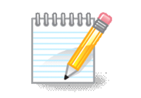

FL
Feng Liu
Professor @ IIE, CAS
Home
About
Publications
Research
Patents & Projects
SciSec & IJDCF
Links
Links
Useful Links
Scholar Profiles · Institutions · Recommended Lists

Resources
Useful Links
Scholar profiles, institutions and recommended conference / journal lists
推荐期刊目录
CCF 2019 · CACR 2018 · IIE 2019
Google Scholar
Scholar Profile
中国科学院大学导师主页
UCAS · Faculty Homepage
dblp
Publication Database
北极星团队官网（暂未开放）
Polaris Team · not yet open
中国科学院
CAS
中国科学院信息工程研究所
Institute of Information Engineering, CAS
中国网络空间安全学会
CCSS · China Cyber Security Society
SciSec 官网
Science of Cyber Security · SciSec 2027
IJDCF 官网
Int. J. Digital Crime and Forensics